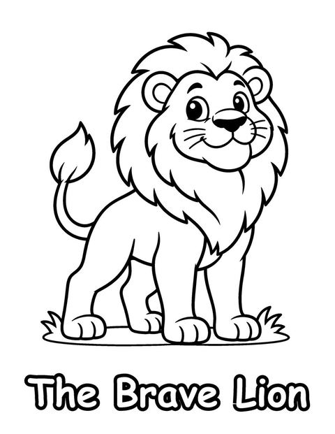
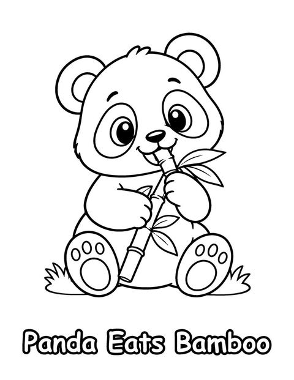
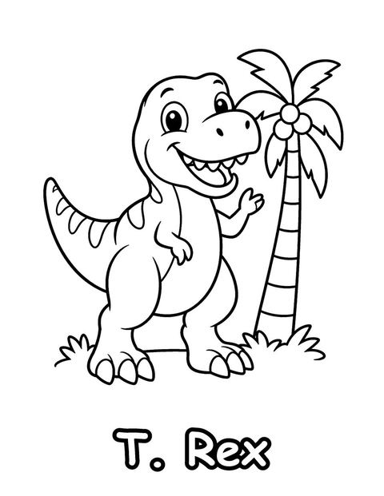
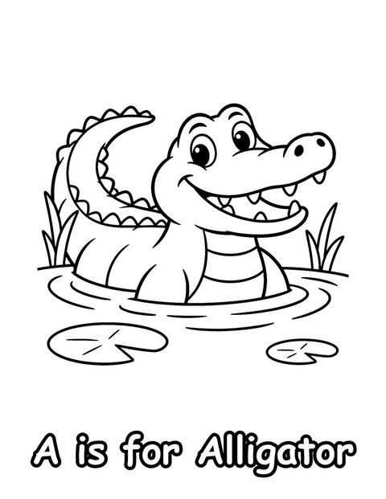
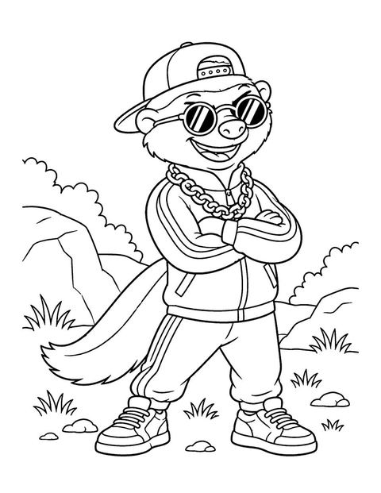
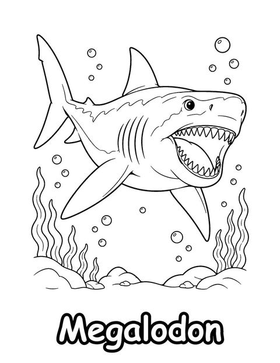
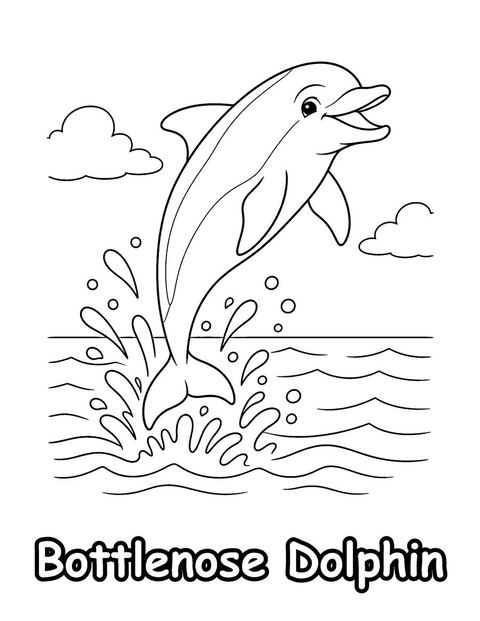
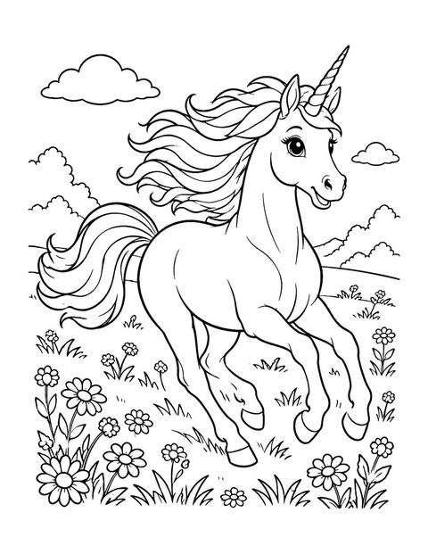
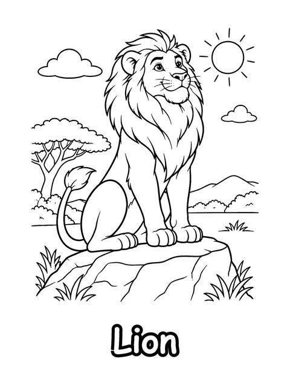

Brave, Busy & Wise
Kids 3-6
Animals paired with a trait: brave, busy, wise.
Free Animal Coloring Pages for PreschoolersPick a theme and print three free coloring pages from each Little Sparrow coloring book. Every page is a ready-to-print PDF for US Letter paper, free for home and classroom use. If your family loves them, the full books are on Etsy and Amazon.

Kids 3-6
Animals paired with a trait: brave, busy, wise.
Free Animal Coloring Pages for Preschoolers
Kids 3-6
Animals and their favorite foods, a first science lesson.
Free What Animals Eat Coloring Pages

Kids 3-6
One cute animal for every letter, A to Z.
Free ABC Animal Coloring Pages
Kids 6-12
A tough, funny honey badger for ages 6-12.
Free Honey Badger Coloring Pages for Kids
Kids 6-12
Ancient ocean giants with their real names.
Free Prehistoric Sea Monster Coloring Pages
All ages
Whales, seals, otters and more, bold and easy.
Free Whale and Sea Otter Coloring Pages
Kids 6-12
40 dolphin species with their real names.
Free Dolphin Coloring Pages for Kids

Kids 6-12
Wild cats and house cats with their names.
Free Cat Coloring Pages for Kids

Adults & teens
Cozy café scenes with bold, easy lines for relaxing.
Free Capybara Coloring Pages for Adults
Teens & adults
Detailed animal mandalas for mindful coloring.
Free Mandala Animal Coloring Pages
Teens & adults
Realistic reef animals with detail to shade.
Free Coral Reef Coloring Pages for Adults
Teens & adults
Realistic polar wildlife for winter coloring.
Free Arctic Animals Coloring Pages
Teens & adults
Lions, leopards, elephants and more, realistic.
Free Safari Animal Coloring Pages